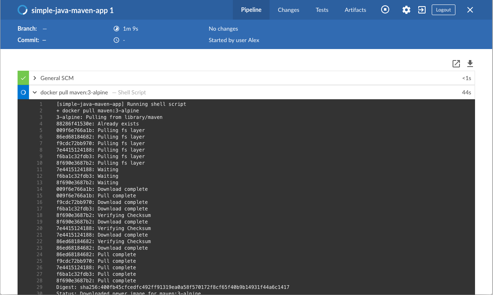
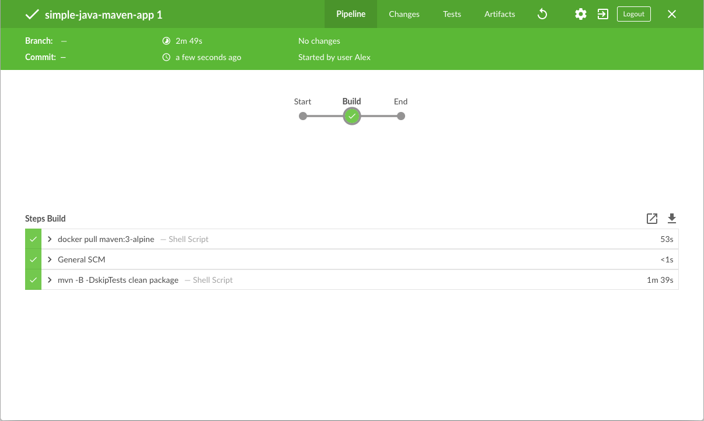

docker run \
--rm \
-u root \
-p 8080:8080 \
-v jenkins-data:/var/jenkins_home \ (1)
-v /var/run/docker.sock:/var/run/docker.sock \
-v "$HOME":/home \ (2)
jenkinsci/blueocean使用Maven构建Java应用程序
Table of Contents
本教程将向你展示如何使用Jenkins编排并构建一个使用Maven管理的简单Java应用程序。
如果你是使用Maven的Java开发人员，并且对CI/CD概念不熟悉，或者你可能熟悉这些概念，但不知道如何使用Jenkins实现构建应用程序，那么本教程适合你。
你将在Github示例仓库中获取一个输出"Hello world!"字符串的简单Java应用，该应用还包含若干单元测试，用于检查main方法。 测试结果保存在JUnit XML报告中。
耗时: 假如你的机器符合配置要求，完成本教程需要20-40分钟。准确的耗时取决于你机器的性能， 以及你是否完成过在Docker中运行Jenkins教程，请参考另一个教程.
你可以在任何时候停止本教程，并从你离开的地方继续。
若你已经完成了另一个教程，可以跳过配置要求和在Docker中运行Jenkins章节， 继续阅读fork示例仓库（确保你本地安装了Git）。 如果你需要重启Jenkins，请参考停止和重启Jenkins.
配置要求
对于本教程，您将需要：
在 Docker中运行Jenkins
在本教程中, 将Jenkins作为 Docker 容器并从
jenkinsci/blueocean Docker
镜像中运行。
要在 Docker中运行Jenkins, 请遵循下面的macOS 和 Linux 或 Windows相关文档说明进行操作。 .
你可以在 Docker和 Installing Jenkins 页面的 Downloading and running Jenkins in Docker部分阅读更多有关Docker容器和镜像概念的信息。
在 macOS 和 Linux 系统上
-
打开终端窗口
-
使用下面的
docker run命令运行jenkinsci/blueocean镜像作为Docker中的一个容器(记住，如果本地没有镜像，这个命令会自动下载):1 将容器中的 /var/jenkins_home目录映射到 Docker volume ，并将其命名为jenkins-data。如果该卷不存在, 那么docker run命令会自动为你创建卷。2 将主机上的`$HOME` 目录 (即你的本地)映射到 (通常是 /Users/<your-username>目录) 到容器的/home目录。Note: 如果复制或粘贴上面的命令片段不起作用, 尝试复制和粘贴这个没有注释的版本:
docker run \ --rm \ -u root \ -p 8080:8080 \ -v jenkins-data:/var/jenkins_home \ -v /var/run/docker.sock:/var/run/docker.sock \ -v "$HOME":/home \ jenkinsci/blueocean -
继续 安装向导。
在 Windows 系统
-
打开命令提示窗口。
-
使用下面的
docker run命令运行jenkinsci/blueocean镜像作为Docker中的一个容器(记住，如果本地没有镜像，这个命令会自动下载):docker run ^ --rm ^ -u root ^ -p 8080:8080 ^ -v jenkins-data:/var/jenkins_home ^ -v /var/run/docker.sock:/var/run/docker.sock ^ -v "%HOMEPATH%":/home ^ jenkinsci/blueocean
对这些选项的解释, 请参考上面的 macOS 和 Linux 说明。
-
继续安装向导。
访问 Jenkins/Blue Ocean Docker 容器
如果你有一些使用 Docker 的经验，希望或需要使用
docker exec
命令通过一个终端/命令提示符来访问
Jenkins/Blue Ocean Docker 容器, 你可以添加如 --name jenkins-tutorials 选项(与上面的
docker run
), 这将会给Jenkins/Blue Ocean Docker容器一个名字
"jenkins-tutorials"。
这意味着你可以通过 docker exec 命令访问Jenkins/Blue Ocean 容器(通过一个单独的终端
/命令提示窗口) ，例如:
docker exec -it jenkins-tutorials bash
安装向导
在你访问 Jenkins之前, 你需要执行一些快速的 "一次性" 步骤。
解锁 Jenkins
当你第一次访问一个新的 Jenkins 实例时, 要求你使用自动生成的密码对其进行解锁。
-
当在终端/命令提示窗口出现两组星号时, 浏览
http://localhost:8080并等待 Unlock Jenkins 页面出现。
-
再次从终端/命令提示窗口, 复制自动生成的字母数字密码(在两组星号之间)。

-
在 Unlock Jenkins 页面, 粘贴该密码到 Administrator password 字段并点击 Continue。
使用插件自定义 Jenkins
在 解锁 Jenkins后, Customize Jenkins 页面出现。
在该页面，点击 Install suggested plugins。
安装向导显示了正在配置的Jenkins的进程，以及建议安装的插件。这个过程肯需要几分钟。
停止和重启 Jenkins
在本教程的其余部分, 你可以通过在终端/命令提示窗口输入 Ctrl-C`停止 Jenkins/Blue Ocean
Docker 容器，你可以从中运行<<run-jenkins-in-docker,上面>>的 `docker run ... 命令。
要重启Jenkins/Blue Ocean Docker 容器:
-
在上面的 macOS,Linux 或 Windows上运行相同的
docker run ...命令 。
Note: 如果有更新的话，该进程会更新jenkinsci/blueoceanDocker 镜像。 -
浏览`http://localhost:8080`。
-
等待直到登录页面出现并登陆。
Fork 和 clone GitHub示例仓库
通过将应用程序源代码所在的示例仓库fork到你自己的Github账号中， 并clone到本地，你就可以获取一个"Hello world!"简单Java应用程序。
-
请确保你登陆了你的GitHub账户。如果你还没有Github账户，你可以在 GitHub网站 免费注册一个账户。
-
将示例仓库
simple-java-maven-appfork到你的账户的Github仓库中。在此过程中，如果你需要帮助，请参考 Fork A Repo 文档。 -
将你的GitHub账户中的
simple-java-maven-app仓库clone到你的本地机器。 根据你的情况完成以下步骤之一(其中<your-username>是你的操作系统用户账户名称)：-
如果你的机器安装了Github Desktop：
-
在GitHub网站上，点击绿色的 Clone or download 按钮，再点击 Open in Desktop.
-
在Github桌面版中，在点击 Clone a Repository 对话框上的 Clone 按钮之前，确保 Local Path 的配置为：
-
macOS 系统配置为
/Users/<your-username>/Documents/GitHub/simple-java-maven-app -
Linux 系统配置为
/home/<your-username>/GitHub/simple-java-maven-app -
Windows 系统配置为
C:\Users\<your-username>\Documents\GitHub\simple-java-maven-app
-
-
-
其他情况:
-
打开一个终端/命令提示符，并且
cd进入正确的目录路径：-
macOS 系统路径为
/Users/<your-username>/Documents/GitHub/ -
Linux 系统路径为
/home/<your-username>/GitHub/ -
Windows 系统路径为
C:\Users\<your-username>\Documents\GitHub\（推荐使用Git bash命令行，而不是通常的Microsoft命令提示符）
-
-
运行以下命令完成仓库的clone：
git clone https://github.com/YOUR-GITHUB-ACCOUNT-NAME/simple-java-maven-app
其中YOUR-GITHUB-ACCOUNT-NAME是你的Github账户的名称。
-
-
在Jenkins中创建你的流水线项目
-
回到Jenkins，如果有必要的话重新登录，点击 Welcome to Jenkins! 下方的 create new jobs
注意: 如果你无法看见以上内容，点击左上方的 New Item 。 -
在 Enter an item name 域中，为新的流水线项目指定名称（例如
simple-java-maven-app）。 -
向下滚动并单击 Pipeline，然后单击页面末尾的 OK 。
-
（ 可选 ） 在下一页中，在 Description 字段中填写流水线的简要描述 （例如
一个演示如何使用Jenkins构建Maven管理的简单Java应用程序的入门级流水线。） -
点击页面顶部的 Pipeline 选项卡，向下滚动到 Pipeline 部分。
-
在 Definition 域中，选择 Pipeline script from SCM 选项。此选项指示Jenkins从源代码管理（SCM）仓库获取你的流水线， 这里的仓库就是你clone到本地的Git仓库。
-
在 SCM 域中，选择 Git。
-
在 Repository URL 域中，填写你本地仓库的 目录路径， 这是从你主机上的用户账户home目录映射到Jenkins容器的
/home目录：-
MacOS系统 -
/home/Documents/GitHub/simple-java-maven-app -
Linux系统 -
/home/GitHub/simple-java-maven-app -
Windows系统 -
/home/Documents/GitHub/simple-java-maven-app
-
-
点击 Save 保存你的流水线项目。你现在可以开始创建你的
Jenkinsfile，这些文件会被添加到你的本地仓库。
将你的初始流水线创建为Jenkinsfile
现在你已准备好创建你的流水线，它将使用Jenkins中的Maven自动构建你的Java应用程序。
你的流水线将被创建为 Jenkinsfile，它将被提交到你本地的Git仓库（simple-java-maven-app）。
这是 "Pipeline-as-Code" 的基础，它将持续交付流水线作为应用程序的一部分，与其他代码一样进行版本控制和审查。 阅读更多关于 流水线 的信息，以及用户手册中的 使用Jenkinsfile 章节。
首先，创建一个初始流水线来下载Maven Docker镜像，并将其作为Docker容器运行（这将构建你的简单Java应用）。 同时添加一个“构建”阶段到流水线中，用于协调整个过程。
-
使用你最称手的文本编辑器或者IDE，在你本地的
simple-java-maven-appGit仓库的根目录创建并保存一个名为Jenkinsfile的文本文件。 -
复制以下声明式流水线代码并粘贴到
Jenkinsfile文件中：pipeline { agent { docker { image 'maven:3-alpine' (1) args '-v /root/.m2:/root/.m2' (2) } } stages { stage('Build') { (3) steps { sh 'mvn -B -DskipTests clean package' (4) } } } }1 这里的 image参数（参考agent章节的docker参数） 是用来下载maven:3-aplineDocker镜像 （如果你的机器还没下载过它）并将该镜像作为单独的容器运行。这意味着：-
你将在Docker中本地运行相互独立的Jenkins和Maven容器。
-
Maven容器成为了Jenkins用来运行你的流水线项目的 agent。 这个容器寿命很短——它的寿命只是你的流水线的执行时间。
2 这里的 args参数在暂时部署的Maven Docker容器的/root/.m2（即Maven仓库）目录 和Docker主机文件系统的对应目录之间创建了一个相互映射。这背后的实现细节超出了本教程的范围，在此不做解释。 但是，这样做的主要原因是，在Maven容器的生命周期结束后，构建Java应用程序所需的工件 （Maven在流水线执行时进行下载）能够保留在Maven存储库中。这避免了在后续的流水线执行过程中， Maven反复下载相同的工件。请注意，不同于你为jenkins-data创建的Docker数据卷，Docker主机的文件系统在每次重启Docker时都会被清除。 这意味着每次Docker重新启动时，都会丢失下载的Maven仓库工件。3 定义了一个名为 Build的stage，之后会出现在Jenkins UI上。4 这里的 shstep（参考steps章节）运行Maven命令干净地构建你的Java应用（不运行任何tests）。 -
-
保存对
Jenkinsfile的修改并且将其提交到你本地的simple-java-maven-appGit仓库。例如，在simple-java-maven-app目录下，运行以下命令：
git add .
继续运行
git commit -m "Add initial Jenkinsfile" -
再次回到Jenkins，如果有必要的话重新登录，点击左侧的 Open Blue Ocean 进入Jenkins的Blue Ocean界面。
-
在 This job has not been run 消息框中，点击 Run，然后快速点击右下角出现的 OPEN 链接， 观察Jenkins运行你的流水线项目。如果你不能点击 OPEN 链接，点击Blue Ocean主界面的一行来使用这一特性。
注意： 你可能需要几分钟时间等待第一次运行完成。在clone了你的本地simple-java-maven-appGit仓库后， Jenkins接下来做了以下动作：-
将项目排入队列等待在agent上运行。
-
下载Maven Docker镜像，并且将其运行在Docker中的一个容器中。

-
在Maven容器中运行
Build阶段 （Jenkinsfile中所定义的）。在这期间，Maven会下载构建你的Java应用所需的工件， 这些工件最终会被保存在Jenkins的本地Maven仓库中（Docker的主机文件系统）。
若Jenkins成功构建了你的Java应用，Blue Ocean界面会变为绿色。

-
-
点击右上方的 X 回到Blue Ocean主界面。

为你的流水线增加test阶段
-
回到你的文本编辑器/IDE，打开你的
Jenkinsfile。 -
复制以下声明式流水线代码，并粘贴到
Jenkinsfile中Build阶段的下方：stage('Test') { steps { sh 'mvn test' } post { always { junit 'target/surefire-reports/*.xml' } } }最终的代码为：
pipeline { agent { docker { image 'maven:3-alpine' args '-v /root/.m2:/root/.m2' } } stages { stage('Build') { steps { sh 'mvn -B -DskipTests clean package' } } stage('Test') { (1) steps { sh 'mvn test' (2) } post { always { junit 'target/surefire-reports/*.xml' (3) } } } } }1 定义了一个名为 Test的stage，之后会出现在Jenkins UI上。2 这里的 shstep （参考steps章节）执行Maven命令来运行你的Java应用的单元测试。 这个命令还生成一个JUnit XML报告，保存在target/surefire-reports目录 （位于Jenkins容器中的/var/jenkins_home/workspace/simple-java-maven-app目录）。3 这里的 junitstep （由 JUnit Plugin 提供）用于归档JUnit XML报告（由上面的mvn test命令生成） 并通过Jenkins接口公开结果。在Blue Ocean中，可以在流水线运行的 Tests 页面获取结果。post章节的always条件包含了这个junitstep， 保证了这个step 总是 在Test阶段 结束后 执行，不论该阶段的运行结果如何。 -
保存对
Jenkinsfile的修改并将其提交到你的本地simple-java-maven-appGit仓库。例如，在simple-java-maven-app目录下，运行以下命令：
git stage .
继续运行
git commit -m "Add 'Test' stage" -
再次回到Jenkins，如果有必要的话重新登录，进入Jenkins的Blue Ocean界面。
-
点击左上方的 Run 然后快速点击右下方出现的 OPEN 链接， 观察Jenkins运行你修改过的流水线项目。 如果你不能点击 OPEN 链接，点击Blue Ocean主界面的 top 行来使用这一特性。
注意： 你会发现本次运行Jenkins不再需要下载Maven Docker镜像。Jenkins只需要从之前下载的Maven镜像运行 一个新的容器。另外，如果最近一次运行 流水线 后，Docker没有重启， 那么在 "Build" 阶段无需下载Maven工件。因此，你的流水线再次运行时速度会更快。
如果你修改过的流水线运行成功，Blue Ocean界面看起来会像下面这样。注意增加的 "Test" 阶段。 你可以点击之前的 "Build" 阶段来获取阶段输出结果。
-
点击右上方的 X 回到Blue Ocean主界面。
为你的流水线增加deliver阶段
-
回到你的文本编辑器/IDE，打开你的
Jenkinsfile。 -
复制以下声明式流水线代码，并粘贴到
Jenkinsfile中Test阶段的下方：stage('Deliver') { steps { sh './jenkins/scripts/deliver.sh' } }最终的代码为：
pipeline { agent { docker { image 'maven:3-alpine' args '-v /root/.m2:/root/.m2' } } stages { stage('Build') { steps { sh 'mvn -B -DskipTests clean package' } } stage('Test') { steps { sh 'mvn test' } post { always { junit 'target/surefire-reports/*.xml' } } } stage('Deliver') { (1) steps { sh './jenkins/scripts/deliver.sh' (2) } } } }1 定义了一个名为 Deliver的stage，之后会出现在Jenkins UI上。2 这里的 shstep （参考steps章节）执行位于jenkins/scripts目录下的shell脚本deliver.sh， 该目录位于simple-java-maven-app仓库根目录下。deliver.sh文件所做动作包含在其自身文本内容中。 一般的原则是，尽量保持你的流水线代码（即Jenkinsfile）越简洁越好，将更复杂的构建步骤放在多个独立的shell脚本中 （尤其对于那些包含2个以上steps的stage）。这最终会使得维护你的流水线代码变得更容易，特别是当你的流水线变得越来越复杂的时候。 -
保存对
Jenkinsfile的修改并将其提交到你的本地simple-java-maven-appGit仓库。例如，在simple-java-maven-app目录下，运行以下命令：
git stage .
继续运行
git commit -m "Add 'Deliver' stage" -
再次回到Jenkins，如果有必要的话重新登录，进入Jenkins的Blue Ocean界面。
-
点击左上方的 Run 然后快速点击右下方出现的 OPEN 链接， 观察Jenkins运行你修改过的流水线项目。 如果你不能点击 OPEN 链接，点击Blue Ocean主界面的 top 行来使用这一特性。
如果你修改过的流水线运行成功，Blue Ocean界面看起来会像下面这样。注意增加的 "Deliver" 阶段。 你可以点击之前的 "Test" 和 "Build" 阶段来获取阶段输出结果。
以下是 "Deliver" 阶段的输出应该是什么样子，向你展示最终Java应用程序的执行结果。

-
点击右上方的 X 回到Blue Ocean主界面，列表显示流水线历史运行记录，按时间顺序倒序排列。

总结
做得好！您刚刚使用Jenkins用Maven构建了一个简单的Java应用程序！
您在上面创建的 "Build", "Test" 和 "Deliver" 阶段是使用Jenkins中的Maven构建更复杂的Java应用程序的基础，以及与其他技术栈集成的Java和Maven应用程序。
由于Jenkins具有极高的可扩展性，因此可以对其进行修改和配置，以处理构建协调和自动化的几乎任何方面。
要详细了解Jenkins可以做什么，请查看：
-
教程概览 页面中的其他介绍教程。
-
用户手册 使用Jenkins的更多细节，例如 Pipelines (尤其是 Pipeline syntax) 和 Blue Ocean 界面。
-
Jenkins blog 资讯，其他教程和更新。